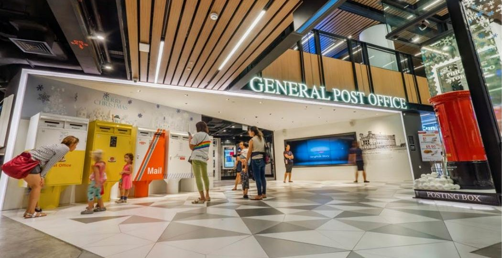
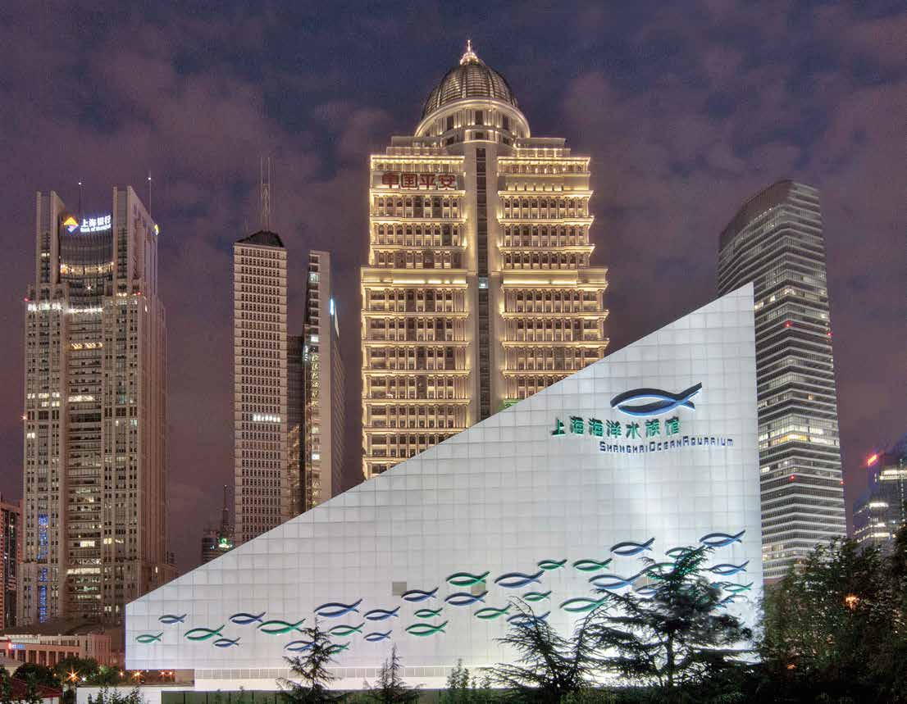
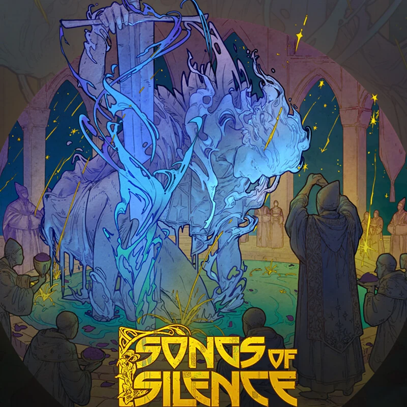

Financial evidence
Primary filings, cash conversion, margins, returns and operating metrics establish what the business has already proved.
Biography
Beyond Our Gallery was founded to make under-covered creative businesses more legible to readers without flattening what makes them distinctive.
Jiarun Yang founded Beyond Our Gallery to explore the businesses behind Singapore's creative economy. His research examines how companies turn creativity into sustainable commercial value, connecting financial analysis with an understanding of consumer behaviour, storytelling and artistic identity.
A Raffles Institution graduate, Jiarun captained Singapore's team at the 2025 International Economics Olympiad and earned an individual gold medal. During an internship at Norias SG, he developed Python tools to analyse institutional investment holdings, deepening his experience in financial research and data analysis.
His interest in creative businesses also comes from making art himself. After more than a decade in the Nanyang Academy of Fine Arts' Young Artist Programme, he founded The Acrylic Project, an initiative combining upcycling, sustainable art and arts education.
Through Beyond Our Gallery, Jiarun brings these perspectives together to make overlooked companies more accessible. He is particularly interested in how creative businesses distinguish themselves, build lasting demand and capture the value of their work.
The research lens
The site treats a creative company as more than a set of accounts. Quality emerges from the relationship between economics, identity and audience demand.
Primary filings, cash conversion, margins, returns and operating metrics establish what the business has already proved.
Brand, craft, intellectual property and artistic differentiation explain why a company may be difficult to replace.
Attention only becomes durable value when audiences return, recommend, pay and deepen their relationship with the work.
Selected path
Each part of the path informs how Beyond Our Gallery asks questions and evaluates evidence.
Captained Singapore's team and earned an individual gold medal. Singapore finished first in the overall team results.
Official resultsDeveloped Python tools to analyse institutional investment holdings during an internship in financial research and data analysis.
Spent more than a decade developing an artistic practice through the Nanyang Academy of Fine Arts.
Founded an initiative bringing together upcycling, sustainable art and arts education.
Builds source-led research that connects business quality with the creative decisions that produce demand.
Author's approach
Company filings, annual reports and direct operating disclosures anchor the analysis before interpretation begins.
Reported figures, calculations, assumptions and undisclosed data are labelled so readers can see where certainty ends.
The fixed methodology organises evidence for comparison; it does not replace the underlying research or a reader's judgement.
Beyond Our Gallery does not publish paid ratings and is not sponsored by the companies it covers.
Selected research

How project execution, regional scale and cash conversion shape the quality of an experience-design business.

A high-margin attractions portfolio tested against concentration, reinvestment and demand recovery.

Scale, bookings and net cash meet the unresolved economics of artist productivity and margin.